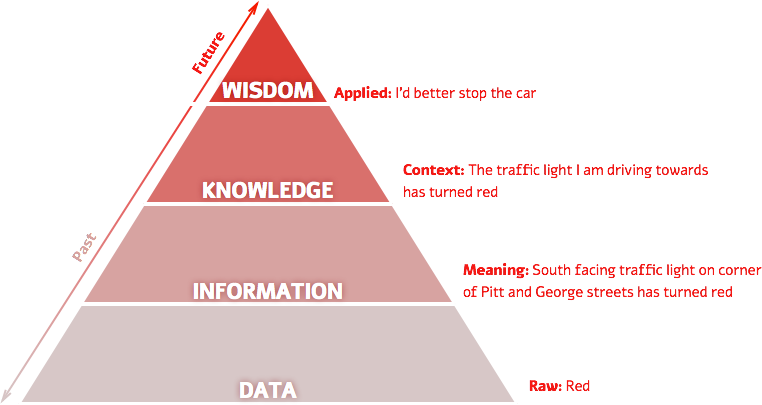
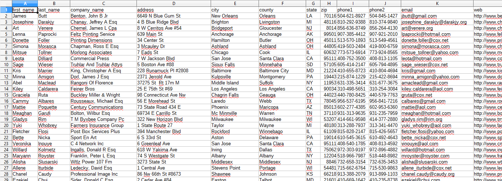
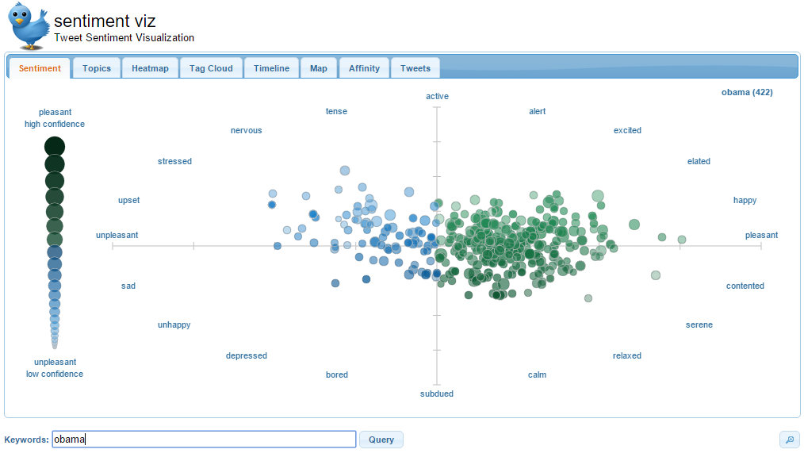

First steps
in Data Mining
with Weka
Łukasz Kobyliński & Radosław Szmit
Codepot 2015
What is Data Mining?
Data Mining is a process of discovering hidden information
in data.

https://visualisingadvocacy.org/blog/disinformation-visualization-how-lie-datavis
Typical applications
Customer analysis

- which customers are likely to increase their purchases?
- which products are more likely to sell to my customers?
Typical applications
Text mining
- what is the category of this email we have received?
- is this product review positive or negative?
- what are they saying about me on twitter?
|
 |
Typical applications
Image mining
- which images in my collection contain cats?
- which of my contacts are visible on these photos?
- what is the sex and age of these people?
|
|
Data Mining Methods
- Classification
- Clustering
- Mining Associations
Task #1
Assign names to flowers
How do they differ?
iris-versicolor,
iris-setosa,
iris-virginica
Fisher's iris dataset
petals and sepals


Task #2
Answer the questions:
- iris-setosa has:
- iris-virginica has:
- the three classes are best separated by:
- sepallength
- sepalwidth
- petalwidth
Task #3
Use the J48 classifier on the iris dataset and answer the questions:
- how many examples of iris-versicolor have been classified as iris-setosa?
- how many examples of iris-virginica have been classified as iris-versicolor?
- what is the accuracy of the classifier on the training set?
Task #4
Use the J48 classifier on the iris dataset and answer the questions:
- use the tree visualization pane to manually perform classification of the following example:
- sepallength=6.7
- sepalwidth=3.0
- petallength=5.0
- petalwidth=1.7
- are all the attributes used in the classifier?
Data: the evolution
| Big Data |
| Data Mining and Knowledge Discovery |
| Data Warehousing |
| Data Access |
| Data Collection |
Data: the evolution
| Big Data |
| "What’s likely to happen to online sales, considering 1M visits/day?" |
| Data Mining and Knowledge Discovery |
| "What’s likely to happen to Boston unit sales next month? Why?" |
| Data Warehousing |
| "What were unit sales in New England last March? Drill down to Boston." |
| Data Access |
| "What were unit sales in New England last March?" |
| Data Collection |
| "What was my total revenue in the last five years?" |